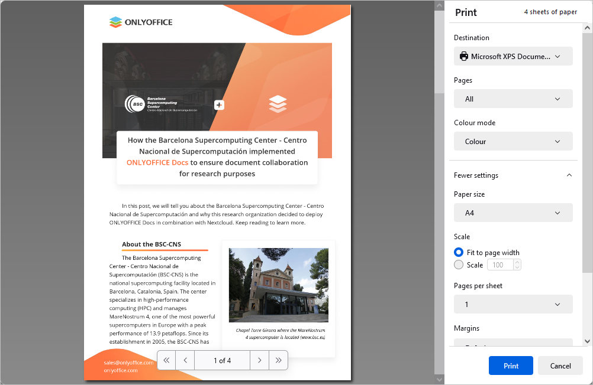

Sačuvajte, preuzmite, odštampajte svoj PDF
Čuvanje
Podrazumevano, PDF Editor automatski čuva vašu datoteku svakih 2 sekunde dok radite na njoj, kako bi sprečio gubitak podataka u slučaju neočekivanog zatvaranja programa.
Da ručno sačuvate trenutni PDF u istom formatu i lokaciji,
- pritisnite Save ikonu u levom delu zaglavlja editora, ili
- kliknite File karticu na gornjoj traci sa alatkama i izaberite Save opciju.
Preuzimanje
U online verziji, možete preuzeti završni PDF na svoj hard disk,
- kliknite File karticu na gornjoj traci sa alatkama,
- izaberite Download as opciju,
- izaberite jedan od dostupnih formata u zavisnosti od potreba: DOCX, PDF, ODT, DOTX, OTT, RTF, TXT, FB2, EPUB, HTML, JPG, PNG.
Čuvanje kopije
U online verziji, možete sačuvati kopiju datoteke na svom portalu,
- kliknite File karticu na gornjoj traci sa alatkama,
- izaberite Save Copy as opciju,
- izaberite jedan od dostupnih formata u zavisnosti od potreba: DOCX, PDF, ODT, DOTX, OTT, RTF, TXT, FB2, EPUB, HTML, JPG, PNG.
- izaberite lokaciju datoteke na portalu i pritisnite Save.
Štampanje
Da odštampate trenutni PDF,
- kliknite Print ikonu u levom delu zaglavlja editora, ili
- koristite Ctrl+P kombinaciju tastera, ili
- kliknite File karticu na gornjoj traci sa alatkama i izaberite Print opciju.

Podesite sledeće parametre u Print prozoru koji se otvara:
- Destinacija - izaberite odredište štampane datoteke, npr., Sačuvajte u PDF, Microsoft XPS Document Writer, Microsoft Print to PDF, Fax, itd.
- Pages - izaberite jednu od opcija za štampanje stranica: Sve, Trenutna, Neparne, Parne, ili Prilagođeno. U poslednjem slučaju potrebno je ručno uneti brojeve stranica.
-
Colour mode - izaberite da li želite vaš fajl štampan u Boji ili Crno-belo. Imajte u vidu da je ova opcija dostupna kada je Microsoft XPS Document Writer Destinacija izabran parametar. Za Fax Destinacioni mod boje je crno-beli podrazumevano.
Kliknite na More settings da otvorite napredna podešavanja.
- Veličina papira - izaberite jednu od dostupnih veličina papira ili definišite sopstvenu.
- Skala - podesite skaliranje dokumenta pri štampanju; možete ga prilagoditi širini stranice ili ručno uneti skalu putem Skala polje za potvrdu i odgovarajuće polje za unos.
- Pages per sheet - podesite broj stranica koje se štampaju na jednom listu, npr., dva, šest, devet, itd.
- Margins - definišite margine stranice. Možete koristiti ili podrazumevane margine ili uneti sopstvene u inčima. Za prilagođene margine unesite vrednosti za gornju, donju, levu i desnu marginu ručno. Možete izabrati i None opciju za štampanje bez margina.
- Options - označite Print headers and footers da biste štampali zaglavlja i podnožja ili poništite izbor da se ista ne štampaju.
- Print using the system dialogue - kliknite na ovu opciju da otvorite sistemski dijalog za podešavanje štampe.
Desktop verzija opcije štampe u desktop verziji su sledeće: izaberite štampač sa Printer liste, izaberite Opseg štampe, unesite Stranice i broj Kopija za štampanje, izaberite Print sides, Veličinu stranice, orijentaciju stranice, i Margine. Da biste podesili dodatna svojstva štampača, pristupite sistemskom dijaloškom prozoru za štampanje pomoćuPrint using the system dialog opcije. Za završetak procesa postavljanja koristite Štampanje ili Štampaj u PDF dugme. Štampaj brzo dugme na gornjoj alatnoj traci omogućava brzo štampanje koristeći poslednji izabrani ili podrazumevani štampač.